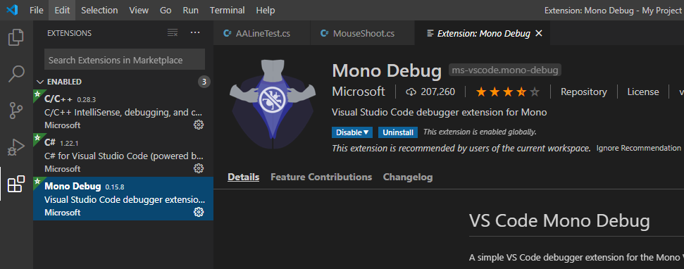
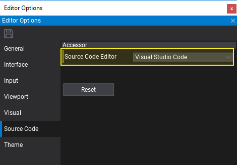
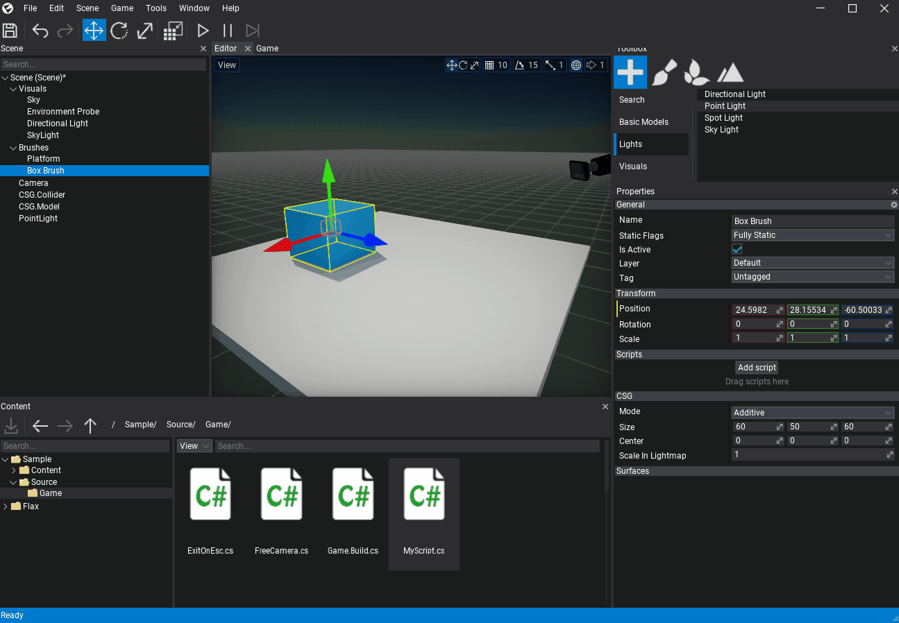
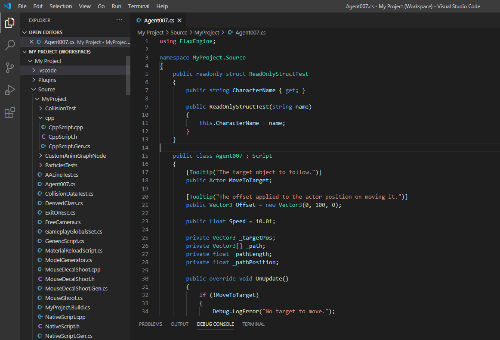
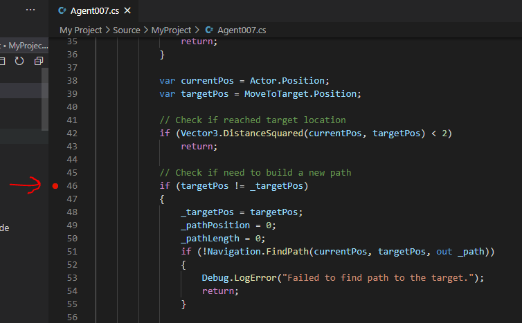
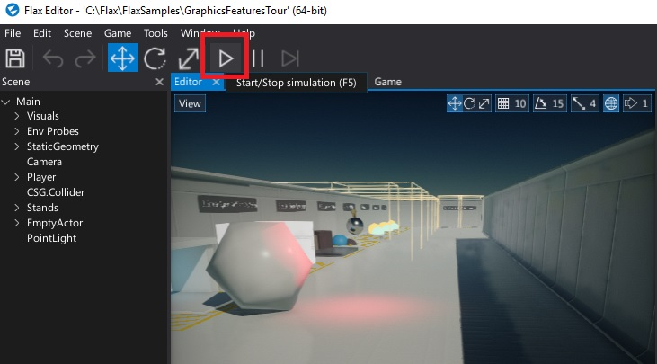
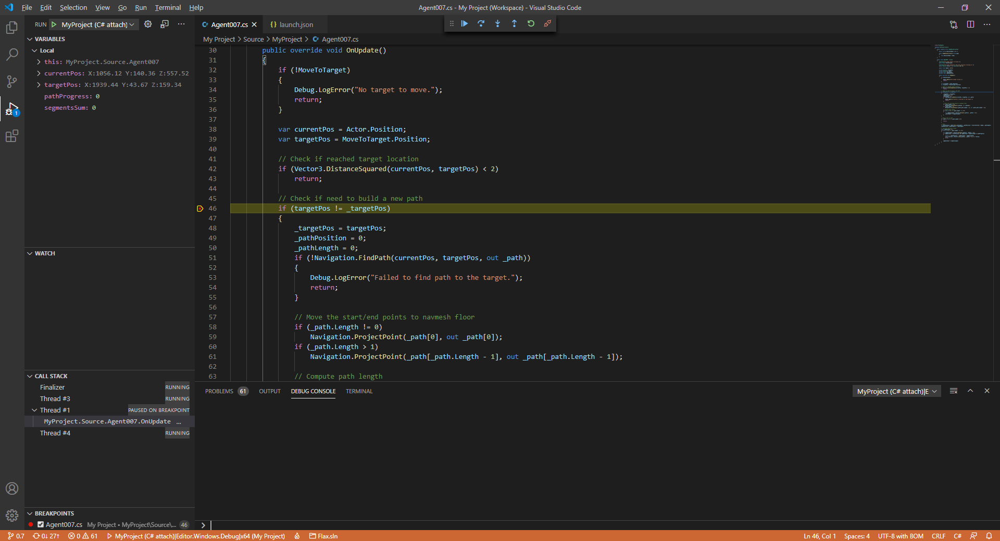

Visual Studio Code

You can download Visual Studio Code here.
1. Install extensions

Programming gameplay for Flax game in VS Code requries a set of extensions:
- C# -
ms-dotnettools.csharp - Mono Debug -
ms-vscode.mono-debug - C/C++ -
ms-vscode.cpptools(optional - useful if you code in C++)
2. Change source code editor

Open Flax Editor, go to Tools -> Options in main menu to open editor options windows. Then select Source Code tab and set Source Code Editor to Visual Studio Code. If this option is missing, then ensure you have VSCode installed. Confirm with the Save button to apply changes.
3. Attach script to actor
To debug script code it has to be attached to the actor in the scene. Simply drag and drop it into the selected actor properties area.

4. Open script in Visual Studio Code
Double-click on a script item and wait for the IDE to show up.

5. Add a breakpoint
Click on a left side of the code editor to assign a breakpoint to the line. Red dot should be added as shown in the picture below.

6. Attach to Flax
To attach with C# debugger to Flax you will need to know the debugger port. This can be checked in the log file of the engine from <project>\Logs - see the latest file and find the line similar to the following:
...
[ 00:00:02.667 ]: [Info] Initialize Scripting...
[ 00:00:02.667 ]: [Info] Mono debugger server at 127.0.0.1:41816
...
This informs about the Mono debugger server running on a local machine and the given port. It's calculated from expression 41000 + process_id % 1000. You can also run Flax Editor with specified ip and port with a command-line argument such as -debug 127.0.0.1:55555.
Once you know the port you can set it in the launch.json file that contains a debugger configurations for VS Code. Find the chunk similar to the following and set the port property to the one your Flax editor is using right now.
...
{
"type": "mono",
"name": "MyProject (C# attach)|Editor.Windows.Development|x64",
"request": "attach",
"address": "localhost",
"port": 55555
},
...
If you set the port property to the proper port you can launch this task and attach with debugger. Visual Studio Code should enter a debugging mode and the bottom of the IDE will remain orange. This signifies IDE is ready for debugging.
7. Start a game
Go back to the Flax Editor and press the Play button to start a game. Then script OnUpdate() function will be called and assigned breakpoint hit.

8. Debug your code
Now you can use all Visual Studio Code debugging features to verify state of the variables and test your code.

For more information about C# in Visual Studio Code, see the VS Code documentation.